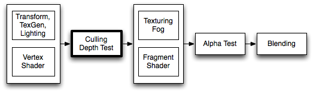

しかし、それはそれで別の問題を引き起こします。
キャラクターなどの複雑な形状のオブジェクトをデプスバッファ書き込みなしの半透明で描画すると、次のようになってしまうのです。

デプスバッファと半透明
コンピューターの描画の仕組みに詳しくない人が思うほど、半透明の描画は簡単なことではありません。3D CGが描画されるとき、フラグメントシェーダーが色をフレームバッファに書き込みます（フレームバッファとは、最終的にモニターに出力される画面のデータ。画面のピクセルの数と同じ数だけ色情報を格納できるメモリ領域）。
そのとき同時に、デプスバッファと呼ばれるメモリ領域に、塗ったピクセルの深度値（カメラから見た奥行きの情報）が格納されます。
デプスバッファのイメージとしては、フレームバッファと同様に画面のピクセルの数だけ情報を格納できるものですが、色ではなく深度値を格納するものになります。
深度値は0～1の値を取ります。（なお、0と1のどちらが近くでどちらが遠くかなのかは、環境によって異なります）。
デプスバッファの内容を画像として出力すると、上図の下側のようになります。
引用：https://en.wikipedia.org/wiki/Z-buffering
このデプスバッファは3D描画のために非常に重要です。
上図では、キューブの手前にスフィアが描画されていますが、この前後関係を正しく描画するのにデプスバッファが役立っています。
現代の3Dの描画では、並列処理で高速化するために、オブジェクトの描画順が特に定まっていません。
上図をレンダリングする際に、キューブとスフィアのどちらが先に描画されるかがわからないということです。
キューブが先に描画されれば、スフィアが後から上書きで描画すれば良いので問題なさそうですが、逆にスフィアが先に描画されてしまったら、後から描画されたキューブが上書きして手前に描画されてしまいそうですよね。
しかし、実際には、そうなりません。これはデプスバッファのおかげです。
フラグメントシェーダーの前工程として、「デプステスト」と呼ばれる工程が存在します。

引用：https://docs.unity3d.com/ja/2018.4/Manual/SL-CullAndDepth.html
デプステストでは、デプスバッファをチェックし、今描画しようとしているピクセルに深度値が書き込まれているかをチェックします。
深度値が書き込まれていなければ、テストは合格となり、フラグメントシェーダーに進みます。
深度値が書き込まれている場合、既に書き込まれている深度値と今描画しようとしているピクセルの深度値を比較します。
今描画しようとしているピクセルのほうが手前の場合、テストは合格となり、フラグメントシェーダーに進みます。
今描画しようとしているピクセルのほうが奥の場合、テストは不合格となり、フラグメントシェーダーはスキップされ、描画は行われません。
（なお、これらはデフォルトの挙動であり、カスタマイズできます）
この仕組みにより、順序を気にせずにオブジェクトの描画を行うことができるのです。
デプステストは、デフォルトでは、手前のオブジェクトが手前に描画されるようになっていますが、変更することも可能です。デプステストの指定を変えてみましょう。
Shader "Unlit/DepthTestTest"
{
Properties
{
_Color("Color", Color) = (1,1,1,1)
}
SubShader
{
Pass
{
ZWrite Off // デプスバッファの書き込みを無効に
CGPROGRAM
#pragma vertex vert
#pragma fragment frag
float4 _Color;
float4 vert(float4 vertex : POSITION) : SV_POSITION
{
return UnityObjectToClipPos(vertex);
}
float4 frag() : SV_Target
{
return _Color;
}
ENDCG
}
}
}
上記のようにZWrite Offと記述することで、デプスバッファへの深度値の書き込みを無効にすることができます。
ZWrite Onと記述すると、深度値の書き込みが有効になります（デフォルト値なので指定する意味はない）。
これらを記述する場所は、SubShaderブロックまたはPassブロックの中です（ただし、CGPROGRAM～ENDCGの外側）。有効範囲は記述したブロック内です。
ZTestを指定すると、デプステストの深度値の比較方法を変更できます。
Shader "Unlit/DepthTestTest"
{
Properties
{
_Color("Color", Color) = (1,1,1,1)
}
SubShader
{
Pass
{
ZWrite On
ZTest Always // デプステストに常に合格する（常に描画する）
CGPROGRAM
#pragma vertex vert
#pragma fragment frag
float4 _Color;
float4 vert(float4 vertex : POSITION) : SV_POSITION
{
return UnityObjectToClipPos(vertex);
}
float4 frag() : SV_Target
{
return _Color;
}
ENDCG
}
}
}
ZTest Alwaysを指定すると、常にデプステストに合格します（奥にあったとしても前面に描画されます）。
ZTest LEqualを指定すると、デプスバッファに既に書き込まれている深度値より、今書き込もうとしているピクセルの深度値のほうが小さいか等しい（Less or Equal）とき、デプステストに合格します（描画される）。これがデフォルト値です。
昔は無かった
便利なデプスバッファですが、3D黎明期はありませんでした。
例えば、初代プレイステーションなどにはありませんでした。
そのため、プログラムで距離順にソートし、奥のものから先に描画していたそうです。
このように便利なデプスバッファ法ですが、半透明描画との相性は悪いです。
デプスバッファ法は、オブジェクトが不透明であることを前提としています。最終結果のピクセルには1つのオブジェクトの色しか出力されないからです。
しかし、半透明描画というのは、複数のオブジェクトの色が混ざり合うことを意味します。
デプスバッファ法による「描画するか、しないか」という二元論では、半透明を実現できないのです。
半透明を実現するために、3Dの描画パイプラインにはBlendingという工程が存在します。
引用：https://docs.unity3d.com/ja/2019.4/Manual/SL-Blend.html
フラグメントシェーダーが出力した色と、フレームバッファに元々書き込まれていた色を混ぜる工程です。
デフォルトでは、色を混ぜずに単純に上書きしますが、ブレンドモードの指定を行うことで、様々な方法で色を混ぜることができます。
色のブレンドを行いたいときは、ブレンド方法を指定します。
Passブロックの中に以下の形式で記述します。
Blend SrcFactor DstFactor
SrcFactorはフラグメントシェーダーから出力された色にかける係数の指定です。
DstFactorは書き込み先のフレームバッファの色にかける係数の指定です。
例えば次のように指定したとします。これは典型的なアルファブレンドです。
Blend SrcAlpha OneMinusSrcAlpha
SrcAlphaはフラグメントシェーダーから出力された色のアルファ値を表します。
OneMinusSrcAlphaは1から、フラグメントシェーダーから出力された色のアルファ値を引いた値を表します。
例えば上記のブレンド設定で、既に青い色（0, 0, 1, 1）が書き込まれている場所に、半透明の赤（1, 0, 0, 0.7）を重ねて描画しようとしたとします。
その場合、赤（1, 0, 0, 0.7）にSrcAlphaつまり0.7がかけられ（0.7, 0, 0, 0.49）となります（※アルファ値にまで0.7がかかるので注意）。
そして青（0, 0, 1, 1）にOneMinusSrcAlphaつまり 1 - 0.7 、つまり0.3がかけられて（0, 0, 0.3, 0.3）となります。
最終的に、（0.7, 0, 0, 0.49）と（0, 0, 0.3, 0.3）が足されて、（0.7, 0, 0.3, 0.79）となります。これが最終結果の色です。
今度は、次のように指定してみましょう。
Blend One One
このように指定すると、フレームバッファの色と、フラグメントシェーダーが出力した色が単純に加算されます。
いわゆる加算ブレンドです。
この指定の場合、アルファ値は意味は結果に影響を与えません。
アルファ値によって濃さを変えたい場合は、フラグメントシェーダーで、アルファ値をRGB値にかける必要があります。
ブレンドに関して詳しいことはUnityマニュアルを参照してください。
なお、ブレンドを行うことで、最終結果のアルファ値が1以外の値に変化してしまっています。フレームバッファのアルファ値は特に使われないので、普通に描画する分には問題ありませんが、描画先がフレームバッファではなくレンダーテクスチャーの場合で、かつ、それを半透明描画しようとすると、意図しない結果になったりするので注意してください（半透明のマップやホログラム風のUIを実装しようとしたときなどになりがち）。
それでは、半透明描画を行うシェーダーを作ってみましょう。ポイントとなる部分を黄色で強調しました。
Shader "MyShader/Transparent"
{
Properties
{
_MainTex ("Texture", 2D) = "white" {}
_Color ("Color", Color) = (1, 1, 1, 1)
}
SubShader
{
Tags { "Queue" = "Transparent" "RenderType" = "Transparent" }
Pass
{
ZWrite Off
Blend SrcAlpha OneMinusSrcAlpha
CGPROGRAM
#pragma vertex vert
#pragma fragment frag
struct appdata
{
float4 vertex : POSITION;
float2 uv : TEXCOORD0;
};
struct v2f
{
float4 vertex : SV_POSITION;
float2 uv : TEXCOORD0;
};
sampler2D _MainTex;
float4 _Color;
v2f vert (appdata v)
{
v2f o;
o.vertex = UnityObjectToClipPos(v.vertex);
return o;
}
float4 frag (v2f i) : SV_Target
{
return tex2D(_MainTex, i.uv) * _Color;
}
ENDCG
}
}
}
今回、最も重要なのは次の部分です。
Blend SrcAlpha OneMinusSrcAlpha
この記述によりブレンドが有効になり、フラグメントシェーダーの出力した色とフレームバッファの色がブレンドされます。
今回、タグにてQueue（描画順グループ）をTransparentにしています。
Tags { "Queue" = "Transparent" "RenderType" = "Transparent" }
これを指定することで、Unityは以下の2つの制御を行います。
ブレンドの仕組み上、描画の順番は極めて重要です。そのため、まず先に全ての不透明オブジェクトを描画し、その後に半透明オブジェクトを描画する必要があります。
さらに、半透明オブジェクトは、奥のものから先に描画しなければ正しくブレンドできないため、距離によるソートが必要です。"Queue" = "Transparent"の指定を行うことで、Unityがこれらの制御をやってくれるようになります。
最後に、この記述について説明します。
ZWrite Off
これは、「デプスバッファへの深度値の書き込みを行わない」という指定です。
不透明オブジェクトでこの指定をしてしまうと前後関係がめちゃくちゃになってしまいますが、半透明オブジェクトは距離順でソートして奥から描画するため、デプスバッファへの書き込みを行わなくても、大きな問題になりません。
なぜこの記述が必要なのかというと、前後関係が複雑な半透明オブジェクト同士が重なったとき、奥にあるオブジェクトが消えてしまうのを防ぐためです。
わざとZWrite Offの記述を行わなかった場合です↓
半透明の赤のオブジェクトに隠れた半透明の青のオブジェクトが、角度によっては消えてしまいます。
これは、描画順のソートがオブジェクト単位であることに起因します。
オブジェクト単位でみたとき、「赤オブジェクトのほうが奥である」と判定されたにも関わらず、「赤オブジェクトの一部が青オブジェクトより手前に来てしまったとき」に、問題が生じます。
青オブジェクトが描画を行おうとしたときには、デプスバッファに既に赤オブジェクトの深度値が書き込まれており、重なっている部分に関しては青オブジェクトのほうが奥であるため、デプステスト不合格で描画がスキップされてしまうのです。
この問題を防ぐために、半透明オブジェクトではデプスバッファへの書き込みを行わないことが多いです。
しかし、それはそれで別の問題を引き起こします。
キャラクターなどの複雑な形状のオブジェクトをデプスバッファ書き込みなしの半透明で描画すると、次のようになってしまうのです。
引用：http://tsubakit1.hateblo.jp/entry/2015/09/07/222755
欲しかった結果↓
引用：http://tsubakit1.hateblo.jp/entry/2015/09/09/233000
キャラクターのような複雑な形状のものを半透明描画する場合は、かなり工夫を行う必要があります（上記リンク先を参照してください）。
このため、最近のゲームでは、なるべく半透明という表現は避けられる傾向にあります。
どうしてもキャラクターなどを半透明にしたい場合は、次章のディザによるアルファ抜きが使われることも多いです。
ディザ（Dither）というテクニックがあります。
昔、コンピューターでたくさんの色が扱えなかったころに、少ない色数でグラデーションを表現するために使われた技法です。
例えば、下図の左のような元画像があったとして、白と黒の2色しか使えない環境で普通に表示しようとすると、右側のようになってしまいます。
引用：https://ja.wikipedia.org/wiki/%E3%83%87%E3%82%A3%E3%82%B6
細かいグラデーションは完全に失われてしまいました。
ディザを使って白黒2色に変換したものが下図になります。

元画像には及びませんが、単純に白黒にしたものよりは、グラデーションが表現できています。
このように、白と黒を良い感じに散布させることでグラデーションを表現するテクニックをディザ（ディザリング）といいます。
最近の一般的なモニターは1677万色（256×256×256）を表現できるので、ディザはほとんど使われなくなりましたが、ディザを応用して半透明を実現する手法が最近のゲームではよく使われます。
拡大するとこうです↓
拡大すると粗が目立ちますが、高解像度でゲームをプレイしているとそれほど気になりません。
オブジェクトの透明度に応じてアルファで抜くかどうかを決めるだけであり、通常の半透明描画と違ってブレンドはしないし、描画順も気にする必要がないのが利点です。
ちなみに、網戸のように見えることから、英語では「Screen Door Transparency」とも呼ばれるようです（Screen Door = 網戸）。
Unityにはあらかじめ、アルファ抜きのためディザマスク画像が組み込まれています。
このような画像です。
小さすぎてよくわからないので、拡大します。
これは、4×4ピクセルが1つのブロックとなっています。それが縦に16個並んでいます。
アルファ値に応じてどの部分を参照するかを決定して、スクリーン上の4×4ピクセルの範囲でマスク画像の4×4ピクセルと1対1で対応させてカットアウトするかどうかを決めます。
上記の画像はわかりやすくするために白黒になっていますが、実際はアルファ値に0または1の値が格納されているため、それを見てカットアウトするかを判断します。
Shader "MyShader/DitherTransparent"
{
Properties
{
[NoScaleOffset] _MainTex("Texture", 2D) = "white" {}
_Alpha("Alpha", Range(0.0, 1.0)) = 1.0
}
SubShader
{
Tags {"Queue" = "AlphaTest" "RenderType" = "Opaque"}
Pass
{
CGPROGRAM
#pragma vertex vert
#pragma fragment frag
// シェーダモデル3.0以上じゃないとVPOSが使えない
#pragma target 3.0
#include "UnityCG.cginc"
// 頂点シェーダー入力構造体
struct vertex_in
{
float4 vertex : POSITION;
float2 uv : TEXCOORD0;
};
// 頂点シェーダの出力構造体
struct vertex_out
{
float4 vertex : SV_POSITION;
float2 uv : TEXCOORD0;
};
// フラグメントシェーダの入力構造体。
// 今回は頂点シェーダーの出力とフラグメントシェーダーの入力が異なる
// （頂点シェーダーではクリップ空間座標を出力し、フラグメントシェーダーではスクリーン座標を受け取りたい）
// ため、頂点シェーダーの出力構造体とフラグメントシェーダーの入力構造体は別々に定義する。
struct frag_in
{
// UNITY_VPOS_TYPE型の変数をVPOSセマンティクスで定義する。
// VPOSセマンティクスを付けると、スクリーン座標が格納される。
UNITY_VPOS_TYPE vpos : VPOS;
float2 uv : TEXCOORD0;
};
sampler2D _MainTex;
sampler2D _DitherMaskLOD2D;
float _Alpha;
#define BLOCK_SIZE 4
#define BLOCK_NUM 16
vertex_out vert(vertex_in v)
{
vertex_out o;
o.vertex = UnityObjectToClipPos(v.vertex);
o.uv = v.uv;
return o;
}
float4 frag(frag_in i) : SV_Target
{
// スクリーン座標
float2 screenPos = i.vpos.xy;
// ディザテクスチャのどこを参照するかのUVを求める。
// 4ピクセル周期で繰り返したいの4で割る
// →0, 0.25, 0.5, 0.75, 1, 1.25, ....となる。
// それのfracを求めると
// →0, 0.25, 0.5, 0.75, 0, 0.25, .....となる
float2 uv = frac(screenPos / BLOCK_SIZE);
// アルファ値の分だけUVのVを上方向にずらす。
// アルファ値が0のときは0、アルファ値が1のときは15/16だけずらしたい。
float voffset = (BLOCK_NUM - 1.0) / BLOCK_NUM * _Alpha;
// uv.yを16で割ることで、Vが1ブロック分（0～0.0624）になる。
// それを上で求めたvoffset分だけ上にずらす。
uv.y = uv.y / BLOCK_NUM + voffset;
// ディザマスク画像の読み込み。
// 抜くべき部分はアルファが0、描画すべき部分はアルファが1となっている。
float mask = tex2D(_DitherMaskLOD2D, uv).a;
// 0.5を引いてclipすることにより、マスクが0だった部分は切り抜かれ、マスクが1だった部分は描画される
clip(mask - 0.5);
// あとはテクスチャから普通に色を取ってきておしまい
return tex2D(_MainTex, i.uv);
}
ENDCG
}
}
}
これでディザによるアルファ抜きができました。
上記のシェーダーコードだと、アルファ値の変更時に、カットアウトした部分がチラチラと動きます。
カメラやキャラクターが動いていれば、ほとんど気にならないと思いますが、もしこれが気になる場合は、次のようにコードを修正します。
float4 frag(frag_in i) : SV_Target
{
// スクリーン座標
float2 screenPos = i.vpos.xy;
// ディザテクスチャのどこを参照するかのUVを求める。
// 4ピクセル周期で繰り返したいの4で割る
// →0, 0.25, 0.5, 0.75, 1, 1.25, ....となる。
// それのfracを求めると
// →0, 0.25, 0.5, 0.75, 0, 0.25, .....となる
float2 uv = frac(screenPos / BLOCK_SIZE);
// 傾きを16倍にする。
// そのままだとアルファ値が1のときにUVのVが1になってしまい、1周して透明になってしまうのを防ぐため、0.999をかけている
// （テクスチャのWrapModeをClampにできれば良いのだが…）
float voffset = _Alpha * BLOCK_NUM * 0.999;
// voffsetからfrac(voffset)を引くことで、16段の階段状になる。
// 16で割って、範囲を0～0.9375に収める。
voffset = (voffset - frac(voffset)) / BLOCK_NUM;
uv.y = uv.y / BLOCK_NUM + voffset;
// ディザマスク画像の読み込み。
// 抜くべき部分はアルファが0、描画すべき部分はアルファが1となっている。
float mask = tex2D(_DitherMaskLOD2D, uv).a;
// 0.5を引いてclipすることにより、マスクが0だった部分は切り抜かれ、マスクが1だった部分は描画される
clip(mask - 0.5);
// あとはテクスチャから普通に色を取ってきておしまい
return tex2D(_MainTex, i.uv);
}
これでカットアウト部分がチラチラと動かなくなりました。